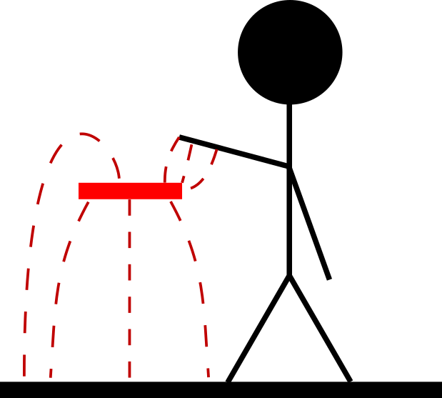

Theory of capacitive sensors
Basics
Capacitive touch systems exploit the property that from an electronic circuit point of view, human beings not much more than large bags filled with a salty (and therefore conductive) liquid. Such objects usually have a pretty good connection with (earth) ground, either directly (resistively) or indirectly (capacitively).
Since capacitive sensors typically are used to measure how far away this ground is, it looks like ground is coming closer when the user moves his hand closer to the sensor, and ground is moving further away when the user removes his hand.
For such systems, the hand of the user (and actually all conducting objects with a reasonably well defined potential) act as one plate of a capacitor and the capacitive sensor itself is the other plate. The closer these plates are, the larger the capacitance is.
The sensor itself consists of a conductive surface (usually a copper pad on a
PCB) and forms one side of the capacitor. The sensor itself has a very weak
connection to ground and thus there are only a few electrical field lines
flowing from the sensor to ground and from sensor to the user. The capacitance
measured by the sensor in this case is very low.

When the user brings his hand or finger closer to the sensor, it looks to the sensor as if ground is coming closer and the connection with ground becomes stronger (more field lines flowing from sensor to user). The capacitance measured by the sensor in this case is high. 
As said before, a capacitive touch sensor is in its most basic form just a conductive surface. Almost any conductive material will work and all you have to do is make sure that the surface is roughly the same shape and area of the object that you use to touch it. In other words: if the sensor is meant to be touched with a finger, make it roughly the size of your finger tip (about 1 square cm); if it is meant to be touched with a hand, make it roughly the size of your hand (about 10 square cm).
Pleaes note to never touch the conductive material of the sensor directly! While this does give you a very strong signal, many touch chips and algorithms (including the one in TouchLib) cannot properly handle this. Furthermore, you might damage the chip or Arduino by static discharge, especially when you are wearing wool or synthetic clothing. Eventhough you might not see, hear or feel a spark, it could still be there and could still be enough to damage for example some GPIO pins or memory bits. Debugging these issues can be very time consuming and frustrating. So, in short: always put a layer of insulation over your sensors.
Interference from other sources
There are several different methods to measure the capacitance of a capacitive sensor but most methods rely on a combination of driving the voltage on the sensor to a known value (supply or ground), followed by leaving the sensor floating and then:
- measuring the time it takes before the voltage on the sensor reaches a certain level, or
- connecting the sensor to a reference capacitor and measuring the voltage on the sensor
In both cases, the sensor is floating, which means that the voltage is easily disturbed by external electrical fields. These fields can flow from the sensor to ground (via the users hand for example). This is usually the desired behaviour.
However, these fields can also flow to or from other sources, such as another
large metallic object that has been placed close by or electrical fields from
(for example) power supplies or from switching signals (PWM lines for LED or
motor control for example). The higher these supply or PWM voltages are and the
closer they are to the sensor (or to the wire connecting the sensor to the
measurement chip), the higher the risk of interference will be. In the figure
below, the microcontroller (Arduino) is connected to an LED and a capacitive touch
sensor. The LED and sensor are connected with long traces that run parallel. In
general this is not a good idea, as it increases the risk of interference from
the LED to the sensor.

When desiging a system with capacitive sensors it is therefore recommended to
take into account which other sources can (capacitively) couple into the sensor
or the wire / trace that connects the sensor to the measurement chip. Ensure
that these sources are far way so that the capacitive coupling is reduced and
avoid running parallel tracks or wires which carry high voltages or switching
signals. This is shown in the figure below.

Alternatively, you can use shielding or guards to reduce the impact of capacitive coupling with these sources. More on that below.
Shields and guards
As we have mentioned above, the capacitive signal is easily disturbed by other sources such as PWM signals. One way to avoid that is to increase the distance between the sensor and the interfering source and to make sure that also the distance between the wires from the interfering source and from the capacitive sensor have maximum distance. An alternative to that is to place some conductive material with a well defined potential between the interfering signal and the sensor.
The most simple construction is to connect this conductive material to the ground of your circuit. In that case, it is called a shield and this is shown in the image below. If this material is at least 3 mm wide (but even wider is better), many of the electrical field lines from the trace to the LED will terminate on the shield and not flow to the trace of the capacitive sensor. One drawback of this however, is that it adds a parasitic capacitance between the trace of the touch sensor and the shield. This can result in a reduced sensitivity of the sensor, but usually this loss of sensitivity well out weighs the problems caused by interference from other signals. Furthermore, this parasitic capacitance can be reduced by increasing the spacing between the shield and the sensor wire. Also, it can be further reduced by placing the guard on only one side of the sensor wire (only place it between the sensor wire and the LED wire).
If the trace leading up to the sensor is not a trace on a printed circuit board but a normal wire, you might consider using a coaxial cable instead. The inside of the coaxial cable is the wire that connects the sensor to the measurement chip and the outside should be connected to ground to work as a shield.

Another method to reduce interference without significantly increasing the parasitic capacitance is by connecting the conductive material not to ground but to the output of an opamp. The negative input of the opamp should also be connected to this material (so the opamp provides 1x gain) and the positive input should be connected to the touch sensor. In this configuration, the voltage on the conductive material will always have the same as on the sensor itself. However, since the opamp is capable of supplying much more current than the sensor (it is a low impedance source), the voltage on the conductive material is not as easily disturbed as the voltage on the touch sensor. The width of the material should again be at lease 3 mm, just like in the case of a shield.
The main advantage of this setup is however, that because the voltage on the guard is always the same as on the sensor, the parasitic capacitance between the sensor wire and the guard is virtually short-circuited. The net effect of that is that the sensor does not see this parasitic capacitance any more.

Similar to the shield, it is possible to use a coaxial cable here as well. Again, the inside of the cable connects the wire to the measurement chip (and to the positive input of the opamp) and the outside connects to the output (and the negative input) of the opamp and works as guard.
Note that it is not possible to share opamps between sensors. You will need as many opamps as you have sensors if you want to use a guard on all of them. Also, if you have 2 touch sensors, you will need 2 guards between the traces leading to the sensors as shown below.

Making a sensor sensitive to only one side
In addition to reducing interference from nearby sources, you can also use shields and guards to make a sensor sensitive to only one side. In that case, you not only have to run the shield or guard next to the traces of the sensor, but also underneath the sensor. Make sure the guard extends the sensor by at least 3 mm on all sides. This will prevent electrical field lines coming from that side to terminate on the sensor and is a very effective way to use a touch sensor in wearables or clothing, as it can ignore the human body on the inside and still respond to touches of hands and fingers on the outside. Also, make sure that there is some insulating material underneath the sensor since you don’t want to accidentally touch the guard. Opamps can deliver more current than the sensor itself can, but it is stil too weak to withstand the short circuit to ground that occurs when you directy touch the guard.